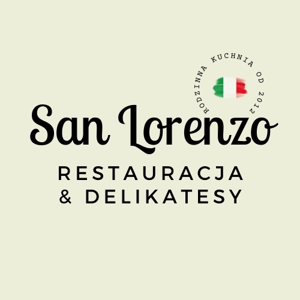

Ciasto na pizzę z mąki 00, pieczone w piecu opalanym drewnem w 360 °C
danie wegetariańskie danie bezglutenowe
Ciasto z mąki 00, piec opalany drewnem 360 °C
Makaron bezglutenowy +2 zł
Dodatki do dań głównych zamawia się osobno
Komunie, chrzciny, urodziny, rocznice, stypy, spotkania zespołów i wigilie firmowe w dwóch zamykanych salach prywatnych.
Pakiety Klasyczny 125 zł/os. · Premium 165 zł/os. · Włoski 195 zł/os.
Dzieci do 9. roku życia: 50% ceny wybranego pakietu. Komunia 2027: 265 zł/os.
Rezerwacje imprez 602 333 806 · smolec@restauracjesanlorenzo.pl
Dla grup 10 osób i więcej doliczamy opłatę serwisową 10%. Opakowanie na wynos 2 zł.Ceny brutto. O alergeny pytajcie obsługę. Lunch od poniedziałku do piątku 12:30–17:00.